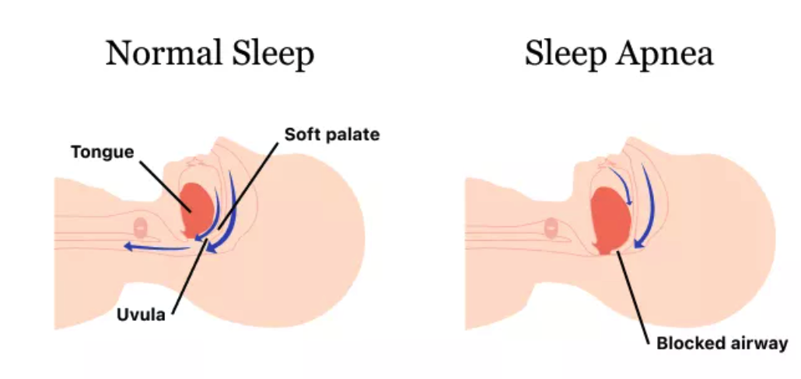
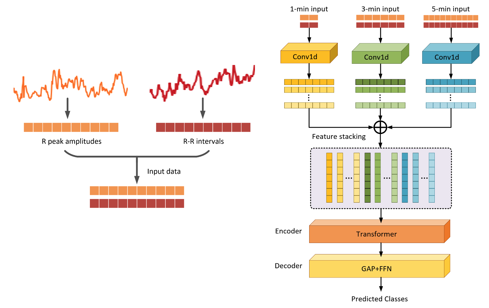
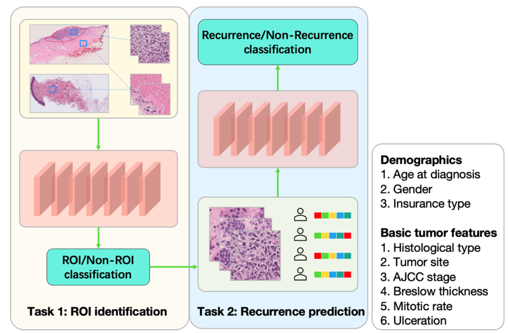

Understanding how the brain works is the foundation to address many unknown problems in cognitive neuroscience, such as where our consciousness comes
from, how do we process memory, and it is also important to find a cure for brain disorders. My work has two major focuses, one is to improve the EEG
source localization accuracy by designing innovative algorithms, another focus is to apply machine learning algorithm to make neuroscience discoveries
to uncover the mystery pattern of our brain. Specifically, to improve the accuracy EEG/MEG Source Imaging (ESI), we utilized the label information and
embedded it into the learning framework, and we can discover discriminative source activation patterns (Liu et al AAAI 2017). Later, to make the
consistent brain source activation reconstruction patterns under the same stimuli, I built a graph regularization framework to make sure the
reconstructed patterns under the same condition have similar patterns (Liu et al, MICCAI, 2017, Liu et al IEEE T Big Data 2017). To utilize the
low-rank structure in the source space, I proposed the low-rank representation framework for ESI, and achieved better performance, and this work won
the best paper award at the international Conference of Brain Informatics (Liu et al Brain Informatics 2018). Given the development of probabilistic
structure learning in machine learning community, we proposed an innovative probabilistic learning framework to solve the inverse problem and use it
to solve ESI and achieve the best performance (Liu et al. IEEE T Medical Imaging, the Best Paper Award at INFORMS Data Mining Society 2019).
More recently, our group designed a new graph frequency decomposition-based method and achieved better result in reconstructing extended brain sources
(Jiao et al. Frontiers in Neuroscience, 2022), and low rank representation technique based low frequency component of spatial graph information to
approximate the extended source activation (Liu et al. MICCAI 2022).
[1] Liu F, Wan G, Purdon P. Extended Electrophysiological Source Imaging with Spatial Graph Filters, MICCAI. 2022 (Oral Presentation 2.4%)
[2] Liu F, Wang L, Lou Y, Li R, Purdon P. Probabilistic Structure Learning for EEG/MEG Source Imaging With Hierarchical Graph Priors.
IEEE Transactions on Medical Imaging. 2021; 40(1):321-334.
[3] Liu F, Rosenberger J, Lou Y, Hosseini R, Su J, Wang S. Graph regularized EEG source imaging with in-class consistency and out-class discrimination.
IEEE Transactions on Big Data. 2017; 3(4):378-391.
[4] Liu F, Wang S, Rosenberger J, Su J, Liu H. A sparse dictionary learning framework to discover discriminative source activations in
EEG brain mapping. Thirty-First AAAI Conference on Artificial Intelligence. 2017
Apnea Detection using weakly supervised deep learing framework
Sleep apnea is a disorder in which breathing repeatedly stops and starts during sleep. Obstructive sleep apnea is the most common type.
Common symptoms of sleep apnea include daytime fatigue, brain fog and dry mouth. Untreated, sleep apnea can lead to
other health problems.With severe health implications.
It is estimated to affect approximately 15% of men and 5% of women in the United States but the majority of patients remain undiagnosed.
Prevalent clinical practice to diagnose sleep apnea involves full-time polysomnography (PSG) that records various physiological signals.
However, the process is expensive, time-consuming, and uncomfortable for patients. Recently, machine learning techniques have attracted much
attention to diagnose apnea based on physiological signals collected. However, most of the existing studies rely on strongly supervised learning
to establish the relation between segments of physiological signals and the annotations on the sleep status. In particular, fine-grained annotations
are required for existing studies to achieve a high level of granularity. However, in practice, it is usually expensive and time-consuming to
acquire a large dataset with such fine-grained annotations. Consequently, the limited availability of fine-grained annotations hinders the wide
implementation of machine learning techniques and limits their granularity. In fact, besides apnea diagnosis, this issue commonly exists in many
other biomedical applications.

We designed a new deep learning framework based on CNN-transformer mixed model based on features from multiple temporal scales with an attention
mechanism to detect apnea occurrence during sleep. Experiments are conducted based on local UF dataset and open-source MIT dataset, which have
demonstrated the effectiveness of deep learning models compared to
benchmark methods in the application of sleep disorders. The newly proposed model achieved the state-of-the-art apnea detection performance,
with an interpretation analysis and visualization for the critical biomarkers of apnea patterns. The PIs have also gained extensive experiences in
improving the model performance in terms of hyperparameters, experimental settings, and settings on signals and features.

Deep learning framework for high risk patients prediction based on H&E whole slide images.
Melanoma is a type of skin cancer that develops from the pigment-producing cells known as melanocytes.
Melanomas typically occur in the skin, but may rarely occur in the mouth, intestines, or eye (uveal melanoma).
In women, they most commonly occur on the legs, while in men, they most commonly occur on the back.[2] About 25% of melanomas develop from moles.
Changes in a mole that can indicate melanoma include an increase in size, irregular edges, change in color, itchiness, or skin breakdown.
